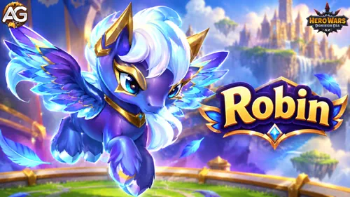
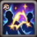
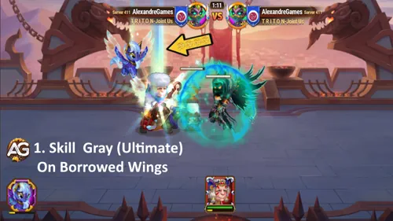
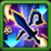
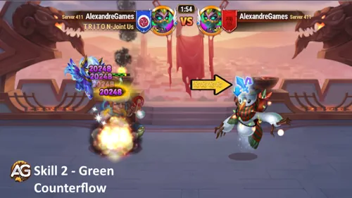
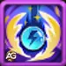
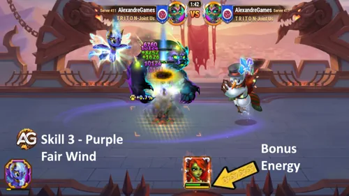

Robin fournit de l’Énergie aux héros lents et entrave les adversaires rapides dans Hero Wars: Dominion Era. Il vole l’Énergie des ennemis, soutient un allié qui a gagné moins d’Énergie et réduit les attaques des adversaires qui reçoivent de l’Énergie supplémentaire.
Sa compétence de patronage, Vent favorable, fournit de l’Énergie supplémentaire à un héros toutes les cinq secondes. Vous trouverez ci-dessous ses statistiques, ses trois compétences, les héros compatibles et les suggestions d’Alexandre pour l’utiliser.

Robin dans Hero Wars: Dominion Era, développé par Nexters.
Les valeurs des compétences ci-dessous reposent sur 12 360 de Puissance de compétence et 11 064 de Puissance de patronage.
Statistiques de Robin
Statistique
Valeur
Puissance
181 943
Puissance de compétence
12 360
Puissance de patronage
11 064
Pénétration magique
47 911
Pénétration d’armure
0
Compétences actives de Robin en tant que familier

1. Sur des ailes empruntées
Description dans le jeu : Vole jusqu’à 90,62 d’Énergie à chaque héros ennemi et la transfère à un allié qui a reçu le moins d’Énergie au cours des 15 dernières secondes. Si un ennemi n’est pas un héros, lui vole 110,6 d’Énergie.
Compétence blanche · Périodique · Temps de recharge de 15 secondes

Sur des ailes empruntées de Robin - Hero Wars: Dominion Era.
Explication de la compétence : Robin retire de l’Énergie à l’équipe ennemie et la transmet à l’allié qui en a gagné le moins au cours des 15 dernières secondes. Cela aide cet allié à se rapprocher de sa prochaine compétence ultime tout en retardant celles des ennemis. Le bénéficiaire est sélectionné selon les gains récents d’Énergie ; il peut donc changer au cours du combat.
Énergie volée à chaque héros : 90,62 (0,45 % Puissance de compétence + 35).
Énergie volée à un ennemi qui n’est pas un héros : 110,62 (0,45 % Puissance de compétence + 55), affichée sous la forme 110,6.

2. Contre-courant
Description dans le jeu : Compétence passive. Lorsqu’un adversaire reçoit de l’Énergie supplémentaire, Robin réduit son Attaque physique et son Attaque magique de 31 000 pendant 5 secondes.
Compétence verte · Passive

Contre-courant de Robin - Hero Wars: Dominion Era.
Explication de la compétence : Un ennemi qui reçoit de l’Énergie supplémentaire perd temporairement de l’Attaque physique et de l’Attaque magique. L’Énergie supplémentaire déclenche cet effet ; l’utilité de cette compétence passive dépend donc des capacités et de l’équipe de l’adversaire. Alexandre cite Orion, Jorgen, Andvari, Alvanor, Tristan et Polaris parmi les adversaires contre lesquels envisager son utilisation.
Formule de réduction des attaques : 250 % de la Puissance de compétence + 100. Avec 12 360 de Puissance de compétence, les deux attaques sont réduites de 31 000.
Patronage de Robin : Vent favorable
Le patronage augmente les statistiques d’un héros compatible et lui accorde la compétence supplémentaire de Robin.
Bonus de patronage pour un héros
Statistique
Bonus
Santé
+99 576
Défense magique
+9 958

3. Vent favorable
Description dans le jeu : Accorde au maître 75,01 d’Énergie supplémentaire toutes les 5 secondes.
Compétence violette · Patronage · Toutes les 5 secondes

Vent favorable de Robin - Hero Wars: Dominion Era.
Explication de la compétence : Le héros sous le patronage de Robin reçoit un bonus régulier d’Énergie, ce qui l’aide à activer sa compétence ultime plus souvent. Alexandre recommande de l’essayer sur des soigneurs et des héros dont les compétences ultimes procurent des boucliers ou des effets de contrôle. Face à Satori, n’oubliez pas que cette Énergie supplémentaire peut exposer le maître à ses marques.
Formule de l’Énergie supplémentaire : 0,452 % Puissance de patronage + 25.
Pourquoi certaines descriptions utilisent-elles 0,45 % ?
Les descriptions disponibles contiennent les deux coefficients. Avec 11 064 de Puissance de patronage, 0,452 % donne 75,01 d’Énergie après arrondi ; 0,45 % donne 74,79. Ce guide utilise la formule qui correspond à la valeur indiquée de 75,01.
L’expérience d’Alexandre : “Ma Byrna est devenue beaucoup plus forte depuis que j’ai commencé à l’utiliser avec Robin.” Ses suggestions se concentrent sur les héros qui tirent parti d’une activation plus fréquente de leur compétence ultime.
Meilleurs choix de patronage : les recommandations d’Alexandre
Alexandre la recommande pour appliquer des effets de sommeil plus fréquemment : sa compétence ultime endort les ennemis pendant 7 secondes.
Associer Robin à Satori
Alexandre voit une association utile contre les ennemis qui gagnent de l’Énergie supplémentaire : Robin réduit leurs attaques tandis que Satori les punit avec des marques. C’est une idée d’équipe à essayer contre les adversaires concernés.
Affronter un Satori ennemi
L’Énergie supplémentaire de Vent favorable peut aussi exposer le maître de Robin aux marques de Satori. Pour cet affrontement, Alexandre suggère d’ajouter Nebula afin d’effacer les marques ou Sebastian pour se protéger des effets négatifs.
Points forts et limites
Aide un allié qui a récemment gagné peu d’Énergie grâce à Sur des ailes empruntées.
Fournit régulièrement de l’Énergie, ainsi que de la Santé et de la Défense magique, grâce au patronage.
Contre-courant dépend du fait que les adversaires reçoivent de l’Énergie supplémentaire.
L’Énergie supplémentaire de Vent favorable peut devenir un inconvénient face à Satori.
Idées d’équipes avec Robin
Alexandre suggère cette composition avec deux options de Drapeau de guerre. Toutes deux utilisent Robin comme familier actif et comme protecteur de Martha.
Vidéo : N’améliorez pas Robin avant d’avoir vu ceci ! 🔊 Audio multilingue (anglais comme langue principale) avec sous-titres !
Coûts d’amélioration et équipement de Robin
Bonus de niveau et ressources
Bonus obtenus grâce aux niveaux
Statistique
Bonus
Puissance de patronage
+3 900
Puissance de compétence
+3 900
Puissance
+42 900
Ressources indiquées pour monter de niveau
Ressource
Quantité
Potions de familier
450 551
Émeraudes
45 055
Pierres d’âme de Robin
3 710
Équipement par rang
Équipement et coûts d’amélioration par rang
Rang
Équipement
Particules du chaos
Or
Émeraudes
Gris
6 × Petite pierre de l’aube
240
48 000
1 680
Vert
4 × Petite pierre de l’aube 2 × Pierre de l’aube
430
86 000
3 010
Vert+1
2 × Petite pierre de l’aube 4 × Pierre de l’aube
620
124 000
4 340
Bleu
2 × Pierre de l’aube 2 × Pierre de lune 1 × Pierre de l’aube inhabituelle 1 × Pierre de lune inhabituelle
1 380
276 000
9 660
Bleu+1
1 × Pierre de l’aube 1 × Pierre de lune 2 × Pierre de l’aube inhabituelle 2 × Pierre de lune inhabituelle
1 950
390 000
13 650
Bleu+2
2 × Pierre de l’aube inhabituelle 2 × Pierre de lune inhabituelle 1 × Pierre de l’aube rare 1 × Pierre de lune rare
3 580
716 000
25 060
Violet
2 × Pierre de l’aube rare 2 × Pierre de lune rare 1 × Pierre de l’aube excellente 1 × Pierre de lune excellente
8 600
1 720 000
60 200
Violet+1
1 × Pierre de l’aube rare 1 × Pierre de lune rare 2 × Pierre de l’aube excellente 2 × Pierre de lune excellente
11 500
2 300 000
80 500
Violet+2
2 × Pierre de l’aube excellente 2 × Pierre de lune excellente 1 × Pierre de l’aube sans défaut 1 × Pierre de lune sans défaut
21 850
4 370 000
152 950
Violet+3
1 × Pierre de l’aube excellente 1 × Pierre de lune excellente 2 × Pierre de l’aube sans défaut 2 × Pierre de lune sans défaut
29 300
5 860 000
205 100
Coûts totaux de l’équipement
Total pour améliorer tout l’équipement
Ressource
Quantité
Particules du chaos
79 450
Or
15 890 000
Émeraudes
556 150
Quantités totales d’équipement
Équipement nécessaire pour l’ensemble des rangs
Équipement
Quantité
Petite pierre de l’aube
12
Pierre de l’aube
9
Pierre de l’aube inhabituelle
5
Pierre de l’aube rare
4
Pierre de l’aube excellente
6
Pierre de l’aube sans défaut
3
Pierre de lune
3
Pierre de lune inhabituelle
5
Pierre de lune rare
4
Pierre de lune excellente
6
Pierre de lune sans défaut
3
Robin convient-il à votre équipe ?
Envisagez Robin lorsque votre équipe a besoin d’utiliser ses compétences ultimes plus souvent ou lorsque l’Énergie supplémentaire est au cœur de la stratégie ennemie. Parmi les premiers choix d’Alexandre à essayer figurent Byrna, Guus, Nebula et Somna. Évaluez l’affrontement contre Satori avant d’attribuer Vent favorable à un héros.
Découvrez d’autres guides de familiers
Découvrez de nouvelles compétences avec nos héros à l’honneur !